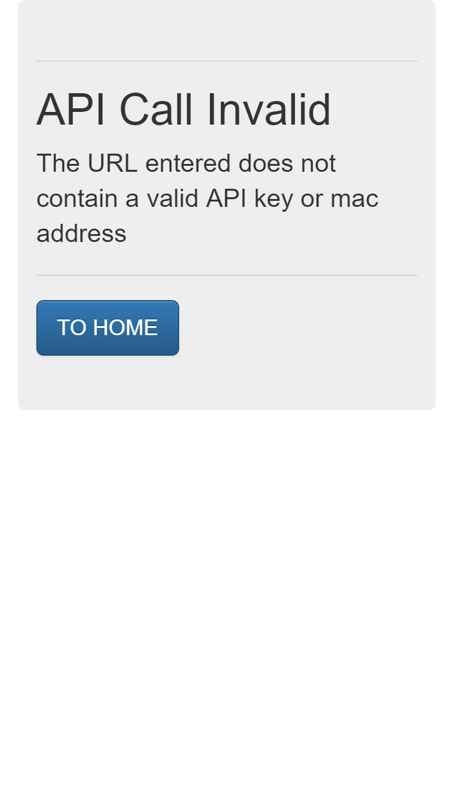

This is the fourth part of a series of posts about building an Internet of Things (IoT) server with flask, Python and ESP8266 microcontrollers. In the last post of the series, we reviewed how to build a web API with flask which accepts temperature measurements. In this post, we'll build in some validation to our web API so that only certain API keys and mac addresses are allowed. We will also use Python's datetime module to time stamp each data point as it comes in.
Introduction
Now that we have a web API, we can make GET requests using a web browser and see the output in the web page flask sends back. What's not to like? Well right now any string added to the URL specified by our web API will get through. We don't want just any WiFi weather station to upload data. What we need is some data validation.
Why data validation?
A web API is a web-based Application Programming Interface. That's a fancy way of saying a server that saves input or produces output based on the URL someone types into their web browser. An example URL that our flask IoT web server accepts is:
https://mydomain.com/update/API_key=ASCIISTR/mac=6c:rf:7f:2b:0e:g8/field=1/data=72.3
In the URL above we've provided:
update(to tell the IoT server to save the data point, not just serve a webpage)API_key = ASCIISTR(to identify the user)mac = 6c:rf:7f:2b:0e:g8(to identify the ESP8255-based WiFi weather station)field = 1(to specify this is a temperature data point, not a humidity data point)data = 72.3(to specify the temperature is 72.3 degrees)
Right now, any string following API_key= and mac= can be inserted into the URL. This allows anyone with an internet connection upload data to the server and potentially upload malicious code to the server. Since an arbitrary string can be inserted as API_key or mac, that arbitrary string will be read by our flask IoT server.
To build in a bit more security into our server, we'll utilize a form of data validation. This means that our flask IoT server will only accept certain API_key= and mac= strings as part of a web API URL.
Validating incoming URLS
The data coming into our IoT server is only from two specific from ESP8266-based WiFi weather stations. There are a couple unique aspects to each of the ESP8266-based WiFi weather stations.
- A user: Each WiFi weather station has a user. In this case the user is me. I can set a unique API key that only I know.
- A mac address: A mac address is a unique address assigned to each piece of hardware. Each of the ESP8266-based WiFi weather stations has a different mac address.
- field: The ESP8266-based WiFi weather stations have the capability to output temperature and humidity. Right now we are just going to deal with temperature, but is will be nice to have an extra field available for multiple data outputs from the same device. There will be a limit to the number of fields one device can send. We'll limit the fields to 1-9
- data: The temperature data that comes out of each ESP8266-based WiFi weather station. This is a float, but can be limited by length.
If we put these 4 identifiers as part of our URL, our IoT server will provide the functionality the WiFi weather stations need.
Below is the general form of a web API url that is valid:
https://mydomain.com/update/API_key=GTW89NF3/mac=6c:rf:7f:2b:0e:g8/field=1/data=72.3
In the URL above we've provided:
- An
API_key = GTW89NF3 - A
mac = mac=6c:rf:7f:2b:0e:g8 field = 1data = 72.3
Now we need to program our flask IoT server to only accept URL's like the URL above, with a set of unique API_key's, mac addresses and limits on the field and data portions of the URL.
On the server, create a new file called config.py. This file will contain the API_key and mac address that is acceptable. It is a good practice to keep these sorts of private keys in a separate file and out of version control. Make sure to add config.py to the .gitignore file if you are using git.
#config.py
API_key = GTW89NF3
mac = mac=6c:rf:7f:2b:0e:g8
Now, on the server, we'll modify the flaskapp.py file's imports section to import the API key and mac address strings from config.py. We can import variables as well as functions and classes from separate .py files.
#flaskapp.py
from flask import Flask, render_template, request
from config import API_KEY, MAC_ADDRESS
Now we'll modify the @app.route section of flaskapp.py:
@app.route("/update/API_key=<api_key>/mac=<mac>/field=<int:field>/data=<data>", methods=['GET'])
def write_data_point(api_key, mac, field, data):
if (api_key == API_KEY and mac == MAC_ADDRESS):
return render_template("showrecent.html", data=data)
else:
return render_template("403.html")
A new template, 403.html that shows an error message, needs to be created in the templates directory.
<!-- /templates/403.html -->
<!DOCTYPE html>
<html lang="en">
<head>
<meta charset="UTF-8">
<meta http-equiv="X-UA-Compatible" content="IE=edge">
<meta name="viewport" content="width=device-width, initial-scale=1">
<title>read temp</title>
<!-- Latest compiled and minified CSS -->
<link rel="stylesheet" href="https://maxcdn.bootstrapcdn.com/bootstrap/3.3.7/css/bootstrap.min.css">
<!-- Optional theme -->
<link rel="stylesheet" href="https://maxcdn.bootstrapcdn.com/bootstrap/3.3.7/css/bootstrap-theme.min.css">
<!-- Latest compiled and minified JavaScript -->
<script src="https://maxcdn.bootstrapcdn.com/bootstrap/3.3.7/js/bootstrap.min.js" integrity="sha384-Tc5$>
</head>
<body>
<div class="container-fluid">
<div class="jumbotron">
<hr class="my-4">
<h1 class="display-4"> API Call Invalid</h1>
<p class="lead">The URL entered does not contain a valid API key or mac address</p>
<hr class="my-4>
<p class="lead">
<a class="btn btn-primary btn-lg" href="/" role="button">TO HOME</a>
</p>
</div>
</div>
</body>
</html>
Adding time stamps
Our web API accepts data points, but it would be nice to see a time stamp of when the temperature was measured. With a time stamp connected to each data point, we can show a webpage with the temperature and when it was measured.
Working with time in Python can be a little confusing. It seems like a simple concept, but times and dates are actually pretty complicated. Which time zone? Save seconds or minutes? What format will the time be in?. We need to answer these questions before building the code to record the time stamp. The way I want the time and date to look on a website our flask IoT server produces is:
05:18:48 PM Aug 17, 2018
Where 05:18:48 is the hour:minutes:seconds, AM or PM for the pacific time zone (in 12hour format), and the date Aug 17, 2018 is in the month day, year format.
To show the timestamp in the format above, I used a helper library called pytz. According to the pytz documentation, pytz is a package for dealing with world timezone definitions in Python. We need to pip install the pytz package into the virtual environment that runs our flask app. See part of this post on how other Python packages were installed on the server.
$ cd ~
$ mkdir flaskapp
$ cd flaskapp
$ python3.6 -m venv flaskappenv
$ source flaskapp/bin/activate
(flaskappenv)$ pip install pytz
(flaskappenv)$ deactivate
$
Now, the flaskapp.py file can be modified to include pytz and Python's datetime and dateutil libraries in the imports:
#flaskapp.py
from flask import Flask, render_template, request
import datetime
import os
import dateutil.parser
from config import API_KEY, MAC_ADDRESS
import pytz
Next, the @app.route section of the flask app can be modified to include the timestamp. Note that we now pass time_stamp=date_time_str to the "showrecent.html" template. We will also need to ensure the showrecent.html template accepts both of these arguments.
@app.route("/update/API_key=<api_key>/mac=<mac>/field=<int:field>/data=<data>", methods=['GET'])
def write_data_point(api_key, mac, field, data):
if (api_key == API_KEY and mac == MAC_ADDRESS):
t = datetime.datetime.now(tz=pytz.timezone('America/Los_Angeles'))
date_time_str = t.isoformat()
return render_template("showrecent.html", data=data, time_stamp=date_time_str)
else:
return render_template("403.html")
In the code above, t = datetime.datetime.now(tz=pytz.timezone('America/Los_Angeles')) saves the datetime when the URL comes in using the datetime module and the 'America/Los_Angeles' time zone from pytz. On the server, we will save the time stamps in the pacific time zone because that's where I live. When we render the template, we can include the PST time zone where we show the time and date.
The showrecent.html template is below:
<!-- /templates/showrecent.html -->
<!DOCTYPE html>
<html lang="en">
<head>
<meta charset="UTF-8">
<meta http-equiv="X-UA-Compatible" content="IE=edge">
<meta name="viewport" content="width=device-width, initial-scale=1">
<title>read temp</title>
<link rel="stylesheet" href="https://maxcdn.bootstrapcdn.com/bootstrap/3.3.7/css/bootstrap.min.css">
<!-- Optional theme -->
<link rel="stylesheet" href="https://maxcdn.bootstrapcdn.com/bootstrap/3.3.7/css/bootstrap-theme.min.css>
<!-- Latest compiled and minified JavaScript -->
<script src="https://maxcdn.bootstrapcdn.com/bootstrap/3.3.7/js/bootstrap.min.js" integrity="sha384-Tc5">
</head>
<body>
<div class="container-fluid">
<div class="jumbotron">
<hr class="my-4">
<h1 class="display-4"> {{ data }}</h1>
<p class="lead">Most Recent Data Point</p>
<hr class="my-4">
<h1 class="display-4"> {{ time_stamp }}</h1>
<p class="lead">Most Recent Time Time Zone: PST</p>
<hr class="my-4>
<p class="lead">
<a class="btn btn-primary btn-lg" href="/showrecent.html" role="button">REFRESH</a>
</p>
</div>
</div>
</body>
</html>
Restart the flask app and view the changes
Now we can restart the flask app and see if our modified web API works. We want to test to see if the 403.html template is rendered when a non-valid URL is entered. We also want to see the time-stamp rendered by showrecent.html when a valid URL is used.
$ sudo systemctl start flaskapp
$ sudo systemctl status flaskapp
# [ctrl-c] to exit.
Now if we go to the web address:
https://yourdomain.com//update/API_key=APGLMD/mac=a3:45:b5:c9/field=1/data=98.6
You should see the the 403 error template rendered. Because the URL above is an invalid URL. It does not contain a valid API key or mac address.

But if you go to the web address:
https://mydomain.com/update/API_key=GTW89NF3/mac=6c:rf:7f:2b:0e:g8/field=1/data=22.0
You should see the showrecent.html template rendered. This URL contains a valid API and mac address.

Summary
It works! When we browse to a URL without the correct API key or mac address, we're returned the 403 error page. If we browse to a valid URL, with the right API key and mac address, our flask IoT server shows the data point we uploaded with a time stamp included.
Next steps
In the next post in this series, we'll modify our flask IoT server to save the data points to a simple database. Then we'll build an html template to render the data from the database instead of just instantaneously based on the web API URL. sqlite3 here we come!